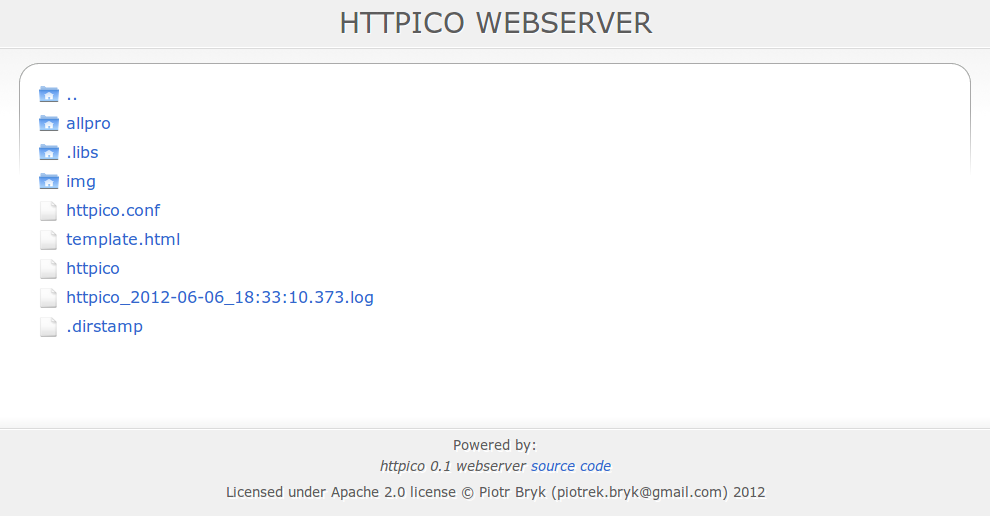
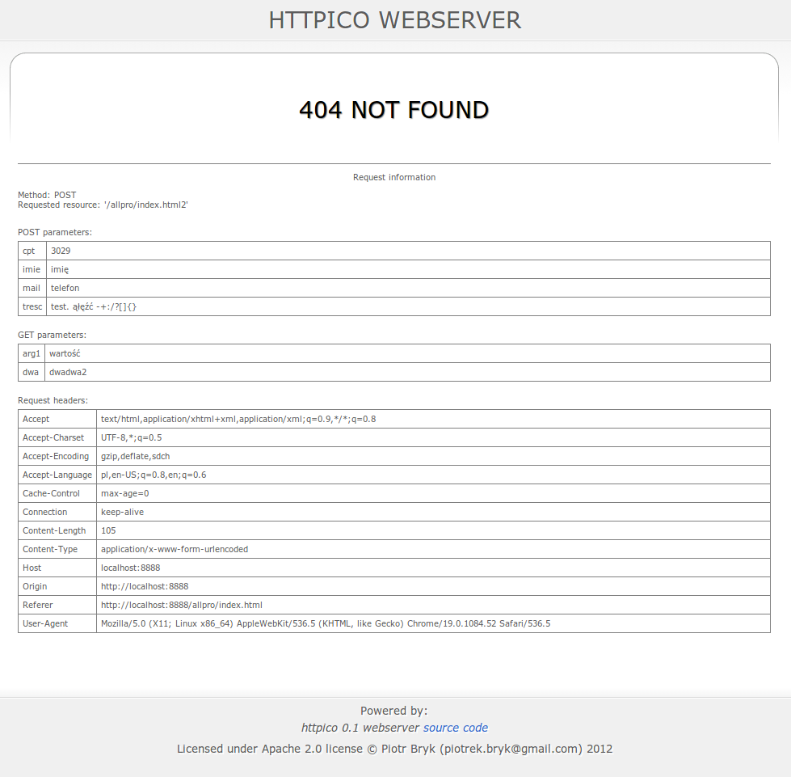

Serwer HTTP “httpico”
Dokumentacja projektu
Przedmiot:
Systemy operacyjne
Kierunek, rok studiów:
Informatyka, rok II (2011/2012 - semestr letni)
Autor:
Piotr Bryk, piotrek.bryk@gmail.com
Treść tematu projektu wymagała aby stworzony serwer HTTP zawierał następujące funkcjonalności:
Wszystkie wyżej wymienione punkty zostały zrealizowane, a ponadto w celu zwiększenia użyteczności tworzonego serwera zostały zaimplementowane dodatkowe funkcjonalności które nie były wymagane w temacie projektu. Są to między innymi:
Ponadto, projekt został wydany na licencji open source Apache 2.0 i jego kod źródłowy jest dostępny pod adresem: https://bitbucket.org/bryq/httpico. Daje to nadzieję, że projekt nie zostanie zakończony wraz z końcem przedmiotu, lecz zostanie kontynuowany w ramach wolnego czasu.
W projekcie zostały wykorzystane tylko standardowe biblioteki języka C++ i systemu UNIX. Dzięki temu serwer jest bardzo przenośny i szybki, jednak skomplikowało to znacznie jego implementację, ponieważ parsowanie i analiza tekstu musiały zostać zrealizowane bez użycia wyrażeń regularnych. Ponadto, zarządzanie pamięcią musiało odbywać się ręcznie, ponieważ nie został wykorzystany żaden garbage collector ani mechanizm smart pointers.
Projekt został stworzony przy użyciu rozproszonego systemu kontroli wersji git z serwerem na darmowej platformie https://bitbucket.org. Na środowisko programistyczne zostało wybrane Eclipse wraz z zestawem wtyczek do wspomagania pracy z językiem C++ i systemem kontroli wersji.
Jako system kompilacji i instalacji został wybrany Linuksowy zestaw narzędzi autotools.
Gdy serwer jest skompilowany w wersji embedded, to poszukuje on pliku konfiguracyjnego w bieżącym katalogu. Ponadto, jeśli w pliku konfiguracyjnym opcja która przyjmuję ścieżkę katalogu nie zostanie określona, to serwer zakłada że jest to bieżący katalog.
Gdy serwer jest skompilowany w wersji standardowej, to poszukuje on pliku httpico.conf w katalogu /etc. Jego domyślna zawartość zaraz po instalacji zawiera przyjazny opis opcji i ich domyślnych wartości:
#default server root is "/usr/share/httpico/srv/" (in non embedded installation) #server_root = /usr/share/httpico/srv/ #default server port is 8888 #server_port = 8888 #default server template root is "/usr/share/httpico/" (in non embedded installation) #server_template_root = /usr/share/httpico/ #default logging directory is "/usr/share/httpico/log/" (in non embedded installation) #logging_directory = /usr/share/httpico/log/ |
Przy każdym uruchomieniu serwera tworzony jest plik *.log o nazwie według schematu:
<rok>-<miesiąc>-<dzień>_<godzina>:<minuta>:<sekunda>.<milisekunda>.log
Pozwala to na łatwą organizację i przeszukiwanie logów.
Przeanalizujmy przykładowy rekord logu:
INFO (2012-06-06_19:12:42.218): 127.0.0.1 'Mozilla/5.0 (X11; Linux x86_64) AppleWebKit/536.5 (KHTML, like Gecko) Chrome/19.0.1084.52 Safari/536.5' GET '/httpico_2012-06-06_18:33:10.373.log' -> 200 Ok, transferred 7143 bytes
Składa się on z kilku części:
Serwer poszukuje w katalogu szablonów pliku template.html, w którym pierwsze wystąpienia ciągów znaków {title} i {content} zastąpi odpowiednio przez tytuł strony i jej treść. Dzięki temu można było osiągnąć nowoczesny wygląd stron błędów i listingów. Domyślnie, strona listingu katalogu może wyglądać tak:
System podczas napotkania błędu zwraca do klienta odpowiedni kod. Przykładowo, podczas żadania nieistniejącego zasobu serwer zwraca następującą stronę zawierającą informacje diagnostyczne na temat żądania. Są to: typ żądania, żądany zasób, lista nagłówków wraz z ich wartościami, nazwy i wartości zmiennych przekazanych przez żądania typu GET lub POST.

Serwer jest w stanie poprawnie wysłać do klienta tylko skończny zbiór zdefiniowanych w kodzie źródłowym typów plików, ponieważ należy dla każdego typu ustalić wartość nagłówka Content-Type. Obsługiwane rozszerzenia plików wraz z ich wartością Content-Type to:
Aby pobrać kod źródłowy należy wykonać polecenie:
# git clone https://bitbucket.org/bryq/httpico.git
Następnie w folderze głównym projektu wykonać:
# ./configure
Dodatkowe opcje konfiguracji to:
Po wykonaniu tych poleceń należy skompilować kod:
# make
Końcowym krokiem jest instalacja:
# make install